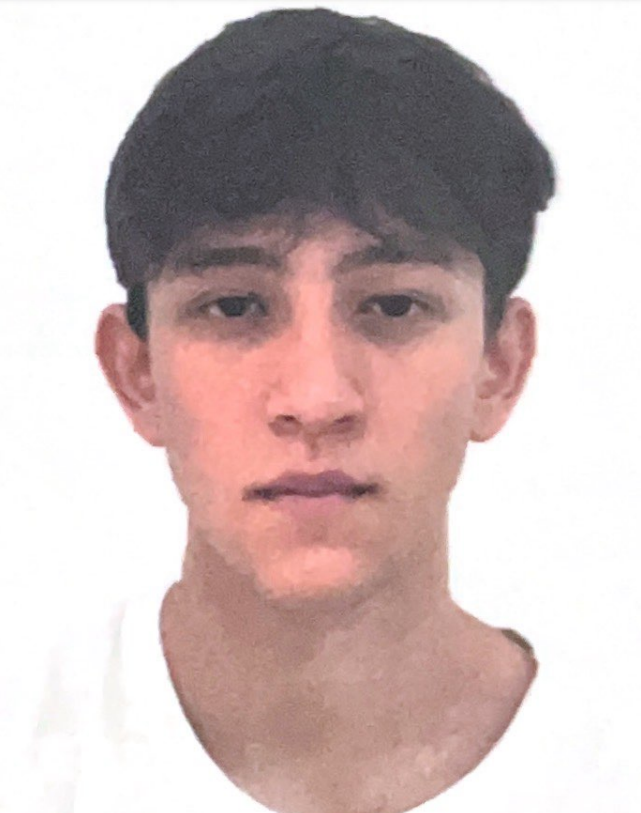

João Pedro Ishida
web developer jr

Objetivos:
- crescer profissionalmente visando
o desenvolvimento do aprendizado na área
- Aplicar conhecimentos acadêmicos e experiências
adquiridas na faculdade para agregar valor de trabalho
- Desenvolver novas habilidades, tanto hard skills
quanto soft skills
Formação
- Ensino Médio (Colégio Jesus Maria e José) - Completo
- Analise e Desenvolvimento de sistemas (FATEC) - Em curso
- Front-End Bootcamp (Udamy) - Em curso
Habilidades
Soft skills:
- Comunicação Eficaz
- Trabalho em Equipe
- Resiliência
- Gestão de Tempo
Hard Skills
- Linguagem VBA avançado
- Linguagem Html intermediário
- Lógica de programação avançada
Sobre Mim
Contate-me